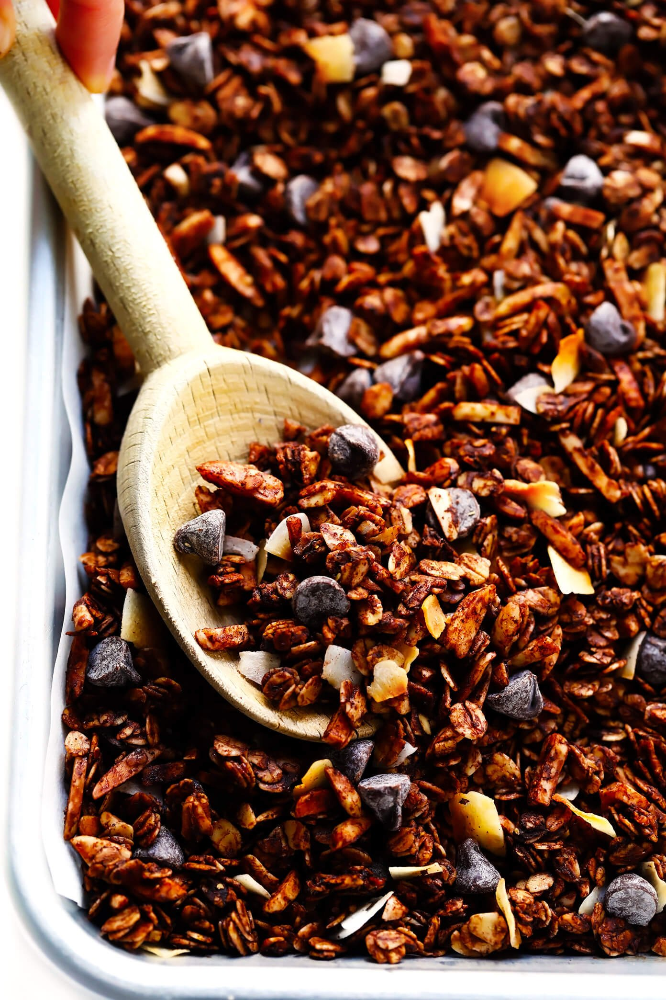

Chocolate Granola
Description
This Healthy Chocolate Granola recipe is super-easy to make, naturally sweetened with honey or maple syrup, and soooo chocolatey and delicious.
This healthy chocolate granola recipe is here for you, friends. It's perfectly rich and decadent and chocolatey, without being overly sweet. It crisps up nicely in the oven so that the texture is crispy and crunchy, and it can also be made to be as clustery as you might like. It's naturally sweetened with your choice of honey or maple syrup, and can be tweaked to be both gluten-free and/or vegan. And most importantly, it is just ridiculously, irresistibly, fabulously good.
This recipe is also super flexible and easy to customize with whatever granola add-ins sound best to you. I realized that the version I photographed here had a bit of an unintentional Almond Joy vibe happening, with all of that delicious extra coconut, almonds and chocolate chips added in. (So good!!) But if those aren't your favorite ingredients, no worries, I have lots of other suggestions for you below.
Ingredients
- 260g rolled oats
- 130g nuts (almonds, hazelnuts, cashews, whatever you like)
- 60g seeds (sunflover, pumpkin, flax)
- 2 tbsp unseetened cocoa powder
- 1 tbsp cinnamon
- 3 tbsp maple syrup or honey
- 4 tbsp coconut oil or rapeseed oil
- 1 tsp vanilla extract
- salt for bringing other flavours
- chocolate chips
Steps
- Toss together (most of) the dry ingredients. Oats, almonds, cocoa powder, salt, that is. We'll save the chocolate chips and coconut for later.
- Whisk together the melted coconut oil, maple syrup, and vanilla. Then drizzle it over the dry ingredients and give everything a good toss until it's evenly mixed. Spread the mixture out evenly on a large parchment-covered baking sheet.
- Let the mixture bake at 350°F for 20 minutes. Then remove from the oven and give the mixture a thorough stir.
- Let the granola cool. Wait for about 20-30 minutes, or until the granola has completely cooled to room temperature.
- Add your mix-ins. Then finally, stir in the chocolate chips and/or any other mix-ins that you might prefer.
- Enjoy! You can either serve the granola right away. Or transfer it to a sealed container, and it should keep for up to 1 month.